Niche Scout · зведення по всій базі
Оновлено: 26.09.2026 · охоплено deep-dive'и бази від 03.07.2026 до 22.09.2026 включно — при наступному оновленні тягнути лише записи ПІСЛЯ 22.09.2026
Де реально заробити: ніші з доведеними свіжими грошима
26 вересня 2026 · база Niche Scout: 40 deep-dive'ів, 716 записів, ~200 застосунків із цифрами · фільтр: реліз ≤ 2 роки (після 09.2024) і дохід ≥ $10K/міс · джерела: SensorTower (Downloads & Revenue), Google Play, App Store, Meta Ad Library · іконки й рейтинги — живі, з iTunes API (26.09.2026)
Пройшло фільтр
16 застосунків
у 10 нішах — свіжий гравець уже заробляє $10K+/міс
Найшвидший кейс
$26K / 2 міс
Chorefriend: з нуля до #41 US House&Home за 60 днів
Найбільший свіжий
$530K/міс
HairApp — 19 місяців від релізу
Без реклами взагалі
$100K / 6 міс
Hairify: нуль оголошень у Meta, чиста органіка + ASO
Головний висновок за 30 секунд
З усієї бази лише 5 ніш мають подвійний доказ: і великі гроші, і СВІЖИЙ гравець, який дійшов до них швидко. Решта — або гіганти, до яких пізно, або ніші, де навіть той, хто робить усе правильно, сидить під $5K/міс.
- 1. Сканер спортивних карток — два незалежні входи по $100K/міс за 10 і 5 місяців; Spoly зробив це на 13 оголошеннях.
- 2. AI-примірка зачісок — чотири свіжі гравці $40–530K/міс; Hairify: $100K за 6 міс без реклами. Але вікно закривається: копіювальники вже в Meta.
- 3. Пари й стосунки — Candle: 0 → $200K/міс за 18 міс, тільки iOS, тільки підписка, тижневий чек $4.99.
- 4. AI-риболовля — Fish AI: $230K/міс при живому Fishbrain; прямо зараз два соло-запуски тестують той самий кут.
- 5. Розклад прибирання — найменші гроші, але найкращий темп ($26K за 60 днів) і найдешевший вхід: аукціон Meta майже порожній.
Хто скільки заробляє серед свіжих (реліз ≤ 2 роки, $/міс)
HairApp $530 000
Glowify $400 000
Fish AI $230 000
Candle: Couples $200 000
Farm Manager 2026 $200 000
StarSnap $100 000
Spoly $100 000
Hairify $100 000
Atlas Photo $100 000
Hair AI $70 000
iFizz $40 000
Chorefriend $26 000
RevMod AI $13 000
RepairBuddy $10–15 000
Mealia $10 000
Зеленим — ніші з кількома свіжими переможцями. Синім — переможець-одинак у своїй ніші. Farming Simulator 26 ($200K, GIANTS) виключено: бренд-інкумбент, не орієнтир.
1. Сканер спортивних карток з AI-оцінкою найчистіший доказ
Два незалежні свіжі входи по $100K/міс — за 10 і за 5 місяців. Spoly зробив це на ~13 оголошеннях проти ~100 у StarSnap: вирішує не бюджет, а хук «наведи камеру → AI-grade + ринкова ціна». Гроші лише в US/CA (Shiny поплив у Малайзію — і монетизація просіла). Антиприклад у ніші теж є: CardSnap із тим самим шаблоном сидить під $5K — виграє якість розпізнавання, а не факт входу. Прихований велетень Card Ladder ($1.1M/міс) грає в іншу гру — цінові дані, не сканування.


Уся ніша з бази Niche Scout (deep-dive 24.08.2026)
| Додаток | Дохід/міс | Завант./міс | Реліз iOS | Монетизація | Реклама | Вердикт NS |
|---|---|---|---|---|---|---|
 Card Ladder прихований велетень Card Ladder прихований велетень | $1.1M | 60K | 2021 | PRO $19.99/міс–$199.99/рік | 0 | 59% доходу ядра з нульовим UA; продає фінансовий термінал колекціонера, moat — цінові дані |
 CollX CollX | $280K | 120K | 2022 | Freemium + маркетплейс 10% | ~30 оголошень | Переріс сканер у маркетплейс — шлях для того, у кого є капітал |
 LUDEX LUDEX | $250K | 80K | 2022 | Freemium, платні скани | ~30 | Еталон performance-моделі: чистий сканер на Meta-трафіку з одним хуком |
| StarSnap | $100K | 60K | 10.2025 | Weekly $3.99–6.99 | ~100 | Головний доказ відкритого вікна |
| Spoly | $100K | 40K | 03.2026 | Weekly-підписка | ~13 | $100K за 5 міс на малому бюджеті |
| Shiny | $30K | 10–15K | 08.2024 | Підписка + free-trial | 1 | Середняк; Android-трафік поплив у Малайзію |
 CardSnap CardSnap | <$5K | <5K | 03.2026 | Підписка + web-funnel | ~30 | Провал того самого шаблону — «ще один сканер» сам по собі не конвертує |
 Sports Card Investor Sports Card Investor | <$5K | 9K | 2020 | Free | 0 | Згасає — аудиторію віддав Card Ladder |
 Collectr суміжний, TCG Collectr суміжний, TCG | $800K | 400K | 2022 | Підписка + шеринг | офлайн-спонсорство | TCG/Pokémon-зріз монетизується краще за спортивний |
 PriceCharting суміжний PriceCharting суміжний | $70K | 130K | 2023 | Підписка на прайс-дані | Active | Стеля «просто довідника» без портфельної аналітики |
 PSA суміжний PSA суміжний | <$10K | 140K | 2015 | Грейдинг поза стором | 0 | Бренд-велетень за трафіком, нуль у сторі; «оцінка як у PSA» — валідний хук |
 Arena Club суміжний Arena Club суміжний | <$10K | 70K | 2024 | Vault/комісія поза стором | Active iOS | Трафік є, in-app доходу нема |
Потенціал: скільки ринку не зайнято
Ринок ядра
$1,87M/міс
із них чисті сканери — ≈$760K; решта в цінових даних
Лідер і вільна частка
59% / 41%
Card Ladder тримає 59%, але грає в іншу гру — продає цінові дані, не сканер
Незайнятий попит
140K завант./міс
PSA: величезний трафік і <$10K у сторі — монетизує грейдинг офлайн. Попит є, у сторі його ніхто не продає
Новачок дійшов за
5 міс
Spoly: 0 → $100K/міс на 13 оголошеннях
Стадія
🟡 Середина
Вікно ще є, але аукціон гарячий: у лідера ~100 живих оголошень
2. AI-примірка зачісок по селфі найбагатша · вікно закривається
Ядро ніші ~$1.24M/міс, і 9 з 14 гравців увійшли після січня 2025. Ключовий кейс — Hairify: $100K/міс за 6 місяців з нуля, на найдорожчому тижневому прайсі й без жодного оголошення в Meta. Але годинник цокає: HaircutAI вже дослівно копіює креативи лідера — база фіксує, що вікно «дешевого Meta» закриється за місяці, не роки. Окреме вільне вікно — Android: Vit Corp. збирає 1M завантажень/міс і монетизує <$5K, чоловічий сегмент (fade/beard) на дорогих гео не монетизує ніхто.


Уся ніша з бази Niche Scout (deep-dive 20.08.2026)
| Додаток | Дохід/міс | Завант./міс | Реліз | Монетизація | Реклама | Вердикт NS |
|---|---|---|---|---|---|---|
| HairApp (iOS+And) | $530K | 600K | 02.2025 | Тижн. $7.99–14.99, рік $18.99–39.99 | ~120 Meta | Лідер і прихований revenue-велетень: 43% виторгу ядра |
| Glowify (iOS) | $400K | 200K | 08.2025 | Тижн. $9.99, рік $39.99 | ~130 Meta | №2: paid UA дає швидкий масштаб |
| Hairify (iOS) | $100K | 80K | 02.2026 | Тижн. $12.99, рік $39.99 | 0 | Найважливіший доказ вікна: $100K/6 міс без Meta |
| Hair AI (iOS) | $70K | <5K | 10.2024 | Тижн. $9.99–19.99, рік до $69.99 | 0 | Аномалія: виторг тримає легасі-база на топ-прайсі |
 iFizz (iOS) iFizz (iOS) | $40K | 70K | 03.2025 | Тижн. $5.99–9.99, рік $79.99 | 0 у Meta | Тригер ніші; купує трафік поза Meta — Meta не єдиний канал |
| AI Hairstyle Try On & Color (Vit Corp., And) | <$5K | 1M | 05.2026 | IAP $19.99–38.99 | Active | Найбільше вільне вікно: install-лідер ядра не монетизує |
| Modiface Haircut (And) | $30K | 300K | 2023 | IAP $0.99–99.99 | — | RPD ~$0.10 — стеля «дешевий трафік + слабкий пейвол» |
| Hair Styler App (And) | $30K | 50K | 2023 | IAP $2.99–49.99 | 0 | Найкращий RPD Android (~$0.60) — еталон Android-монетизації |
| Hairstyle Try On – AI Haircut (And) | $20K | 100K | 2021 | IAP $9.99–49 | 0 | Старий SKU тримає $20K органікою — попит стабільний |
| Hair Color & Hairstyle Try On (And) | $20K | 70K | 04.2025 | Тижн./річна $6.99–59.99 | — | Свіжий UK-видавець: вхід 2025–26 не закритий |
| HAIR U (And) | <$5K | 80K | 03.2026 | IAP $0.99–99.99 | — | Антиприклад гео: трафік IN/BD/PK не платить |
| AI Men's Hairstyle (And) | <$5K | 40K | 12.2025 | IAP до $6.49 | — | Чоловічий pure-play порожній — найвужче чисте вікно |
 Moggr — Looksmax AI Moggr — Looksmax AI | <$5K | <10K | 2022 | IAP + тижн. $3.99–6.99 | 0 | Розмив позиціонування в looksmaxxing — і згас |
 HaircutAI (Musargu Labs) HaircutAI (Musargu Labs) | <$5K | <5K | 02.2025 | Тижн. $9.99–14.99 | ~6, тест | Копіює креативи HairApp дослівно — вікно закривається |
 FaceApp суміжний велетень FaceApp суміжний велетень | $2M | 1M | 2017 | IAP $4.99–99.99 | 0 | Generic face-editor; забирає верхівку попиту органічно |
 Facetune (Lightricks) суміжний Facetune (Lightricks) суміжний | $300K | 100K | 2018 | IAP до $199.99 | Active | Поставив «Hair» у назву — платформи вже визнали попит |
Потенціал: скільки ринку не зайнято
Ринок ядра
$1,24M/міс
90% грошей на iOS; Android майже не монетизований
Лідер і вільна частка
43% / 57%
HairApp $530K; другий гравець забирає ще 32% — разом 75% у двох руках
Незайнятий попит
1M завант./міс
Vit Corp (Android): install-лідер усього ядра й <$5K виторгу. Плюс чоловічий сегмент (fade/beard) не монетизує ніхто
Новачок дійшов за
6 міс
Hairify: 0 → $100K/міс БЕЗ жодного оголошення
Стадія
🟡 Вікно закривається
Копіювання креативів лідера вже почалось — рахунок на місяці, не роки
3. Ігри-питання та зв'язок для пар США вільні · composite 15/18
Candle: 0 → $200K/міс і 11 174 оцінки за 18 місяців. Тільки iOS, тільки підписка, тижневий чек $4.99. Ринок ≈$790K/міс без велетня: найбільший Couple Joy (29%) купує LatAm і за США не бореться. Американський Meta-аукціон тримає один гравець (Cozy Couples, ~85 оголошень). Вільне вікно назване базою прямо: чиста механіка «колода питань» — DeepQ доводить RPD $2.5, 21 Questions доводить $40K/міс узагалі без реклами. Терапевтичний кут («робота над стосунками») перевірений трьома гравцями і не масштабується — заходити через розвагу.


Уся ніша з бази Niche Scout (deep-dive 21.09.2026)
| Додаток | Дохід/міс | Завант./міс | Реліз | Монетизація | Реклама | Вердикт NS |
|---|---|---|---|---|---|---|
| Couple Joy | $230K | 500K | 2022 | Рік $29.99–39.99, тижд | 1 у US | Лідер, але за США не бореться |
| Candle | $200K | 200K | 03.2025 | Рік $39.99–49.99, тижд $4.99 | поза Meta | 0 → $200K за 18 міс, iOS-only |
| Cozy Couples | $110K | 99K | 2023 | Рік $23.99–39.99 + Stars | ~85 | Головний конкурент за CPM і доказ каналу |
| DeepQ | $100K | 40K | 2023 | Тижнева $5.99–9.99 | Active | RPD $2.5 — механіка «колода питань» перемагає |
 Couples Games & Challenges (Chouic) Couples Games & Challenges (Chouic) | $50K | 60K | 2014 | Рік лише $14.99 | 0 | Старожил із заниженим чеком — вразливий до перехоплення |
 SumOne SumOne | $50K | 100K | 2019 | Рік $29.99 | Active | Весь у KR/JP/TW — американський зріз вільний |
 21 Questions 21 Questions | $40K | 25K | 2023 | Тижд $3.99–14.99, рік $19.99 | 0 | $40K/міс чистою органікою — вільне вікно: додай UA |
 Lovify Lovify | <$10K | 90K | 2023 | Лише разові $0.99–11.99 | 0 | Ціна помилки з моделлю: той самий обсяг у Cozy дає $110K |
 Evergreen Evergreen | <$10K | <10K | 2021 | Рік до $69.99 | Active | Преміум-позиціонування не тримає обсяг |
 Dovey 7 міс Dovey 7 міс | <$5K | 6K | 02.2026 | Рік $19.99–39.99, тижд $4.99 | 0 | Наш профіль (соло, iOS, tier-1): стільки дає органіка без Meta |
 Couple Game: Relationship Quiz Couple Game: Relationship Quiz | <$10K | <10K | 2018 | Міс $7.99–10.99 | 0 | Стара база не захищає — мережевого ефекту в ніші немає |
 Paired суміжний велетень Paired суміжний велетень | $200K | 50K | 2020 | Рік $36.99–74.99 | Active | RPD $4 — але це «терапія», не гра; не конкурувати в лоб |
 Lasting / Agapé / Couples (Codeway) суміжні Lasting / Agapé / Couples (Codeway) суміжні | <$5K кожен | <5K | 2017–2022 | Рік $29.99–99.99 | вимкнули | Терапевтичний кут тричі перевірено — не масштабується |
Потенціал: скільки ринку не зайнято
Ринок ядра
$790K/міс
плюс суміжна полиця $215K, з яких 93% тримає один Paired
Лідер і вільна частка
29% / 71%
Найфрагментованіша з п'яти — і лідер Couple Joy купує LatAm, а не США
Незайнятий попит
90K завант./міс
Lovify: той самий обсяг, що дає конкуренту $110K, у нього дає <$10K — разові покупки замість підписки
Новачок дійшов за
18 міс
Candle: 0 → $200K/міс, тільки iOS, тільки підписка
Стадія
🟢 Приймає новачків
US-аукціон викуповує ОДИН гравець; 21 Questions бере $40K/міс узагалі без реклами
4. AI-риболовля: прогноз клювання + «на що ловити» є окремий deep-dive
Fish AI: реліз січень 2025 → $230K/міс і 150K завантажень/міс за 20 місяців, у tier-1 EN, при живому Fishbrain ($2.3M/міс). Виграв не повнотою, а вузьким кутом: карта + «на що ловити» + журнал, AI-обгортка й платний UA. І прямо зараз ніша перезапускається: два соло-запуски (Catch і Fishing Club AI) увімкнули Meta-рекламу з різницею в 11 днів — живий A/B-тест гіпотези «bite score». Повний розбір із матрицею фіч — на окремій сторінці: Риболовля: точки, клювання, погода, принада.


Ядро ніші з бази Niche Scout (deep-dive 18.09.2026)
| Додаток | Дохід/міс | Роль у ніші |
|---|---|---|
| Fishbrain | $2 300 000 | Велетень із мережевим ефектом — 70% усіх грошей |
 Fishing Points Fishing Points | $270 000 | №2, карти й точки |
| Fish AI | $230 000 | Свіжий переможець: новий кут пробиває і при велетні |
 Fish Deeper Fish Deeper | $170 000 | Прив'язаний до залізяки (сонар) |
| $140 000 | Прогнози, старий гравець | |
 Fishbuddy Fishbuddy | $70 000 | Лідер DE — без прогнозу клювання й тиску |
 FishAngler / onWater / ALLE ANGELN FishAngler / onWater / ALLE ANGELN | $30–50K | Середняки; ALLE ANGELN — рівень, досяжний соло |
| Catch: Fishing Forecast 07.2026 | <$5K | Соло-вхід, реклама з 16.09.2026 — стежити як за живим A/B |
 Fishing Club AI 08.2026 Fishing Club AI 08.2026 | <$5K | Другий соло-вхід за місяць, той самий меседж BiteScore |
Потенціал: скільки ринку не зайнято
Ринок ядра
$3,26M/міс
Найбільший із п'яти — і це головна пастка ніші
Лідер і вільна частка
70% / 30%
Fishbrain — не просто велетень, а велетень із МЕРЕЖЕВИМ ефектом: точки додають самі користувачі
Незайнятий попит
DE / PL
Аукціон Meta там порожній (0 оголошень), локальні лідери роблять лише $30–70K/міс, а в німецького немає навіть прогнозу клювання
Новачки дійшли за
не дійшли
Catch і Fishing Club AI запустились улітку, увімкнули рекламу у вересні — обидва досі <$5K/міс
Стадія
🔴 Пізня
Tier-1 EN закритий; заходити лише новим кутом (як Fish AI) або в порожнє гео
5. Розклад домашнього прибирання рекомендовано NS · composite 16/18
Chorefriend: реліз 30.06.2026 → $26K/міс і #41 US House&Home за 60 днів, без бренду. Ринок ≈$330K/міс, велетня немає (лідер Sweepy $110K = 33%), в Meta реально лише 2 рекламодавці на 16 додатків — аукціон майже порожній. Контрольна група вбудована в саму нішу: Homsy і Home Routines без платного трафіку сидять під $5–10K у тих самих гео. Правила входу з бази: чек $20–40/рік (не $100+), тільки tier-1 гео, креатив «фото безладу → мікрокроки з таймінгом». Вільне суміжне вікно — дитячі chores (NeatKid $6K/міс органікою, аукціон нуль).


Уся ніша з бази Niche Scout (deep-dive 01.09.2026, зі знятими цифрами ST)
| Додаток | Дохід/міс | Завант./міс | Реліз | Монетизація | Реклама | Вердикт NS |
|---|---|---|---|---|---|---|
| Sweepy | $110K | 40K | 2020 | $3.99/міс, $19.99/рік | ~10–12 | Ревеню-лідер (39% ядра) найдешевшим чеком |
| Tody | $50K | 30K | 2013 | $9.99–79.99/рік | 0 | Найсильніший moat: бренд + рейтинг 4.83 |
 HomeTasker HomeTasker | $30K | 35K | 2022 | До $109.99 lifetime | Active iOS | Найдорожчий чек дає втричі менше за Sweepy: вирішує гео, не ціна |
| Chorefriend | $26K | 14K | 06.2026 | $6.99/тиж – $69.99/рік | ~4 | Головний доказ відкритого вікна |
 FlyLady FlyLady | $22K | <10K | 2016 | $1.99/тиж – $37.99/рік | Active iOS | Контент-моат: найвища монетизація на завантаження |
| TOM суміжний | $20K | <5K | 2019 | $3.99/міс | 0 | Медійний бренд — індикатор попиту, не конкурент |
 BeTidy BeTidy | $15K | <10K | 2023–24 | $23.90–35.90/рік | Active iOS | DACH-вікно: німець платить без US-конкуренції |
 Flatastic Flatastic | $12K | ~10K | 2015 | $18.49–34.99/рік | Active iOS | Суто DACH flat-share; за 10 років не вийшов за DE |
 Nipto Nipto | <$10K | ~10K | 2020 | $12.99/рік | Active iOS | 671K інсталів без грошей: кут «хто винен» не платить |
 Housy / Tidy Housy / Tidy | <$10K | <10K | 2021–22 | $0.99–34.99 | — | Згасають: хаос тарифів / трафік із RU |
 NeatKid дитяча вертикаль NeatKid дитяча вертикаль | $6K | 5K | 2024 | $3.99–69.99 | 0 | Платить батько → вищий ARPU; аукціон порожній |
| Homsy 01.2026 немає в US-сторі | <$10K | <10K | 01.2026 | $19.99/рік | 0 | Контроль: без UA удвічі повільніше за Chorefriend |
 Home Routines Home Routines | <$5K | <5K | 04.2025 | $19.99/рік | Active | Ніша карає слабкий UA, а не пускає всіх підряд |
 Chore Focus (ADHD) Chore Focus (ADHD) | <$10K | <10K | 2023 | $29.99/рік | 0 | ⚠️ ADHD-таргет у Meta = бан акаунта; кут формулювати через «перевантаженість» |
Потенціал: скільки ринку не зайнято
Ринок ядра
$330K/міс
Найменший із п'яти — але й найдоступніший
Лідер і вільна частка
39% / 61%
Sweepy — і виграє він ОБСЯГОМ на найдешевшому чеку ($19.99/рік), а не ціною
Незайнятий попит
14 з 16
Стільки гравців не купують трафік узагалі. Плюс Nipto: 671K інсталів і <$10K — соціальний кут дає завантаження, але не платежі
Новачок дійшов за
2 міс
Chorefriend: 0 → $26K/міс за 60 днів на ~4 оголошеннях
Стадія
🟢 Рання
Велетня немає взагалі: жодного гравця навіть з 5M інсталів
Маркетинг топ-5 ніш: хто рекламується, де, чим і як довго
Знімки Meta Ad Library з deep-dive'ів (липень–вересень 2026) + прапорці рекламодавця SensorTower. Apple Search Ads і TikTok публічних бібліотек не мають, тож «купує поза Meta» — висновок від протилежного: ST бачить закупівлю, Meta порожня.
1. Сканери карток — найгарячіший аукціон із п'яти
| Хто | Канал | Обсяг | Як довго | Контент |
|---|---|---|---|---|
| StarSnap | Meta | ~100 | хвилями березень→21.08 (~6 міс) | вертикальне відео «наведи камеру — побач вартість» |
| CollX | Meta | ~30 | свіжі від 20.08 | «пішов з eBay на CollX, комісія лише 10%» — продає вже маркетплейс |
| LUDEX | Meta | ~30 | постійно | ОДИН хук на десятках плейсментів: «Snap a photo. Get instant card values.» |
| CardSnap | Meta | ~30 | burst 19–23.08 (оголошення по 5 годин) | веде на web-funnel cardsnap.com |
| Spoly | Meta | лише ~13 | з березня 2026 | «Scan any sports card in a second, get AI grade & real market value» |
| Shiny | Meta | 1 | — | промокод FREE30 (безкоштовний місяць) |
| Card Ladder ($1.1M!) | — | 0 | ніколи | його згадують ЧУЖІ оголошення як цінову довідку |
| Collectr суміжний | офлайн | 0 у Meta | постійно | спонсорство card show'ів + промокод COLLECTR50 |
| CardLedger pre-launch | Meta | waitlist | з серпня | випад у категорію: «Every TCG app shows a portfolio number. CardLedger shows what your cards actually sell for» |
Аукціон живий і дорожчає (серпневий burst CardSnap), але Spoly довів $100K/міс з 13 оголошень — виграє хук «AI-grade», не бюджет. Кут «реальні ціни продажу» вже займає pre-launch гравець.
2. AI-зачіски — двоє масштабують, найкращий не рекламується
| Хто | Канал | Обсяг | Як довго | Контент |
|---|---|---|---|---|
| HairApp ($530K) | Meta | ~120 | безперервно ~3 міс (22.05→18.08) | мультисторінкова «біла» структура (кілька сторінок на один додаток), ES-локалізація з 17.08 |
| Glowify ($400K) | Meta | ~130 | постійно | одна сторінка, відео-креативи; свіжий кут з 14.08 — prank-фото |
| Hairify ($100K) | — | 0 | — | чиста органіка + ASO на найдорожчому тижневому прайсі |
| Hair AI ($70K) | — | 0 (вимкнено) | легасі | виторг тримає стара база |
| iFizz ($40K) | поза Meta | ST: Active, Meta: 0 | — | купує в іншій мережі (ASA/TikTok) |
| HaircutAI | Meta | ~6, тест | з 01–05.08 | дослівно вкрав копірайт HairApp («Tap, transform, wow!» + ті самі хештеги), веде на веб-воронку |
Найчіткіший «годинник вікна»: копіювання креативів лідера вже почалося — дешевий Meta закінчиться за місяці. Hairify показує запасний вхід: узагалі без Meta.
3. Пари — один гравець тримає весь US-аукціон
| Хто | Канал | Обсяг | Як довго | Контент |
|---|---|---|---|---|
| Cozy Couples ($110K) | Meta US | ~85 | безперервно з 12.2024 — 22 місяці | вайтлист UGC-креаторів (kayleeee.gee), кут «дім для стосунків» + віджет/лок-скрін |
| Candle ($200K) | поза Meta | ST: Active, Meta: 0 | 18 міс | купує в іншій мережі або під іншою сторінкою |
| Couple Joy ($230K) | Meta | 1 у US | — | весь бюджет у LatAm, за США не бореться |
| 21 Questions ($40K) | — | 0 | — | чиста органіка/ASO |
| Paired суміжний | Meta | Active | роками | «терапевтичний» бренд із психологами |
22 місяці безперервного трафіку Cozy = економіка каналу доведена, але покупець у US-аукціоні фактично один. Candle зробив $200K, оминаючи Meta — у ніші два робочі канали.
4. AI-риболовля — рекламна хвиля почалась у вересні 2026
| Хто | Канал | Обсяг | Як довго | Контент |
|---|---|---|---|---|
| Fish AI ($230K) | Meta + обидві платформи (ST) | активний | ~рік | AI-обгортка «карта + на що ловити» |
| Catch 07.2026 | Meta US | 3 UGC-креативи | з 16.09.2026 | TikTok-хуки: «Your buddy isn't lucky, he just checks first» |
| Fishing Club AI 08.2026 | Meta US → Play | 1 креатив | з 05.09.2026 | «BiteScore turns live conditions into one simple answer: fish now, or wait» |
| Fishbrain | Meta | US гарячий (29 по ніші) | роками | бренд + соцграф уловів |
Два незалежні соло-запуски ввімкнули рекламу з різницею 11 днів — але у Catch трафік уже зносить у TR/AZ/BG замість США. DE/PL-аукціон повністю порожній (0 за «Beißzeiten»/«Angel App») — деталі в риболовному deep-dive.
5. Прибирання — найпорожніший аукціон, найдешевший вхід
| Хто | Канал | Обсяг | Як довго | Контент |
|---|---|---|---|---|
| Sweepy ($110K) | Meta, iOS-install | ~10–12 | безперервно з січня 2025 | сторінка «Sweepy - home cleaning app» |
| Chorefriend ($26K/2 міс) | Meta, обидві платформи | ~4 | з липня, свіжі креативи 31.08 | «фото безладу → 7–12 мікрокроків із таймінгом» — готовий шаблон |
| FlyLady ($22K) | — | 0 своїх | — | чужа сторінка «Kristina Cook» (TidyMinds) крутить ~5 оголошень ПРОТИ FlyLady/Sweepy |
| решта 13 гравців | — | 0 | — | — |
2 реальні рекламодавці на 16 додатків. ⚠️ ADHD-кут конвертить, але прямий ADHD-таргет = бан акаунта Meta — формулювати через «перевантаженість», не діагноз.
Живі креативи — прямі посилання в Meta Ad Library
Бібліотека публічна, логін не потрібен: відкривається одразу з відео, текстами й датами стартів. Це ЖИВИЙ стан — оголошення зникають, щойно рекламодавець їх гасить; хочеш архів — кажи, знімемо скріншотами в наступному прогоні Niche Scout.
- Картки: StarSnap · Spoly · CollX · Ludex · CardSnap
- Зачіски: HairApp · Glowify · HaircutAI (клон, що краде копірайт лідера)
- Пари: Cozy Couples (22 місяці кампанії, UGC-креатори) · Paired
- Риболовля: Fish AI · Fishing Club AI · Catch: Fishing Forecast
- Прибирання: Sweepy · Chorefriend
- Другий ешелон: Mealia (країна GB!) · Atlas Photo · RepairBuddy
Дві поради: по коротких загальних словах (Framed, Catch, Paired) видача шумить — відкрий будь-яке оголошення і перейди на сторінку рекламодавця («See all ads from this page»), там чистий пул. І частина гравців (HairApp) веде рекламу з кількох «білих» сторінок — одна сторінка ≠ весь бюджет.
Наскрізні патерни всіх п'яти ніш
- Meta — не єдиний канал. Candle ($200K), iFizz ($40K) купують поза Meta (ASA/TikTok): у базі це видно як «ST Active + Meta 0».
- Довгожителі каналу — Cozy Couples (22 міс) і Sweepy (20 міс): хтось платить за трафік майже два роки без перерви → юніт-економіка ніші сходиться.
- Чотири робочі формати креативу: вертикальне демо «навів камеру → результат» (картки, зачіски) · UGC-креатори (Cozy, Catch, Zyft) · питання-біль («Why is your food shop so expensive?» — Mealia) · до/після з мікрокроками (Chorefriend).
- Сигнал закриття вікна — крадіжка копірайту лідера (HaircutAI ← HairApp): побачив клона креативів — у ніші лишились місяці дешевого аукціону.
Що робити першим: порівняння «легко зробити × легко зайти» рішення
«Найлегший» і «найшвидший» — різні питання, і відповіді в них різні. Найпростіший ПРОДУКТ — колода питань для пар (екран картки, категорії, стрік, пейвол; ні AI, ні камери, ні зовнішніх даних — «фічі» тут пишуться, а не програмуються; 2–3 тижні соло). Але найкращий ВИБІР — розклад прибирання: трохи складніший продукт при помітно слабшій конкуренції й найсвіжішому доведеному шаблоні запуску.
Скільки грошей ніші лежить ПОЗА лідером
Пари71%
Прибирання61%
Зачіски57%
Картки41%
Риболовля30%
Частка виторгу ядра, яку НЕ тримає лідер: чим довша смуга, тим фрагментованіший ринок і тим більше місця новому гравцю. Орієнтир: понад 60% — ринок без господаря, менш як 35% — winner-take-most. Абсолютний розмір тут навмисно не показаний: він у плитці «Ринок ядра» кожної ніші, бо велика сума при короткій смузі (риболовля: $3,26M і 30%) — це не можливість, а зайнятий ринок.
Скільки часу новачку знадобилось на свої гроші
Прибирання2 міс
Картки5 міс
Зачіски6 міс
Пари18 міс
Риболовляне дійшов
Скільки місяців від релізу найшвидшому свіжому гравцю знадобилось, щоб вийти на свої гроші: Chorefriend $26K за 2 міс · Spoly $100K за 5 · Hairify $100K за 6 · Candle $200K за 18. Риболовля — єдиний випадок, де новачки (Catch, Fishing Club AI) через 2 місяці й увімкнену рекламу досі під $5K: смуга червона, бо це не «швидко», а «не сталося». Коротка смуга = ніша ще винагороджує вхід.
| Ніша | Складність продукту | Темп соло | Конкуренція | Найлегший ключ ASO | Вердикт |
|---|---|---|---|---|---|
| Прибирання брати першим | Низька: кімнати → задачі → частота → розклад → нагадування. Без AI й камери | 4–6 тижнів | Найслабша з п'яти: велетня немає (лідер 33%), 2 рекламодавці на 16 додатків | house cleaning checklist — 68 | Доведений шлях 0 → $26K за 60 днів + контрольна група, як НЕ треба |
| Пари другий SKU | Найнижча з усіх — контент, а не код | 2–3 тижні | Немає велетня, але US-аукціон тримає Cozy Couples 22 міс поспіль | couples questions — 53 (найлегший у зрізі) | Ідеальний продукт «між релізами»: 21 Questions бере $40K/міс із цієї видачі без реклами |
| Картки | Середня: камера + розпізнавання + база цін | 2–3 місяці | Аукціон гарячий (~100 оголошень у лідера), є прихований revenue-велетень | усі ключі 89 | Гроші доведені двічі, але вхід коштує і якості розпізнавання, і бюджету |
| Зачіски | Середня: AI-генерація на кожен запит = собівартість | 1–2 місяці | Двоє масштабують по ~120 оголошень; копіювання креативів уже почалось | haircut try on — 73 | Найбільші гроші й найшвидше закриття вікна |
| Риболовля | Найвища: карти, погода, припливи, solunar, дані по водоймах | 3+ місяці | Велетень тримає 70% грошей | fishing app — 88 | Новий кут пробиває (Fish AI), але це найдорожчий вхід за даними |
Розклад прибирання — готові правила входу
Усе нижче — з фактів цього дослідження, не з загальних міркувань.
- Чек $20–40/рік, не $100+. HomeTasker зі стелею $109.99 робить $30K/міс — утричі менше за Sweepy з $19.99/рік. Вирішує обсяг і якість гео, не ціна.
- Тільки tier-1 гео (US/UK/CA/AU; DACH — дешевше друге вікно, BeTidy там робить $15K майже без конкуренції). HomeTasker потонув на бразильському й російському Android-трафіку.
- Креатив — CleanTok-формат: «фото безладу → 7–12 мікрокроків із таймінгом». Це дослівний шаблон Chorefriend, і він уже окупився.
- ASO-драбина: назва під
house cleaning checklist(складність 68 — у топ-10 сидять гравці з ≤4 відгуками), далі ріст уcleaning schedule(81). - ADHD-кут: у Meta формулювати ТІЛЬКИ через «перевантаженість» — прямий таргет на діагноз = бан акаунта. Зате в ASO він вільний: «ADHD Cleaning Checklist» з 1 857 відгуками стоїть №5 у видачі.
- Платний трафік із першого тижня, хай і $10–20/день: Homsy (01.2026) і Home Routines (04.2025) — та сама ніша, ті самі гео, БЕЗ реклами — обидва під $10K. Ніша карає слабкий UA, а не пускає всіх підряд.
- Вільне суміжне вікно — дитячі chores: NeatKid робить $6K/міс чистою органікою при нульовому аукціоні, платить батько → вищий ARPU за конструкцією.
Головний ризик — не ринок, а утримання: список справ закидають. У лідерів працює не CRUD, а відчуття прогресу — у Tody «свіжість» кімнати деградує візуально, у Chorefriend мікрокроки з таймінгом. Реалістична ціль першого року: рівень Chorefriend/BeTidy ($15–30K/міс); стеля ніші — Sweepy ($110K/міс).
ASO-зріз топ-5 ніш: складність ключів у видачі App Store
Живий топ-10 App Store US по 15 ключах, знято 27.09.2026 через iTunes Search API. Складність — та сама формула, що в трекері Apprism:
20·log₁₀(1 + медіана відгуків топ-10). Орієнтир за нашими даними: ≈50–65 — у топ-10 сидять застосунки з сотнями відгуків, органічний вхід реальний; 70–80 — треба тисячі відгуків; 85+ — топ тримають гравці з десятками тисяч, самим ASO не зайти.| Ніша | Ключ (US) | Складність | Медіана відгуків топ-10 | Що у видачі |
|---|---|---|---|---|
| Картки | sports card scanner | 89 | ~27 000 | Весь топ-10 нішевий: CollX, PSA, Ludex, StarSnap #4, Spoly #6 — свіжі гравці ВЖЕ в топі, але пробились paid+продуктом, не ASO |
| card value scanner | 89 | ~27 500 | Ті самі + Collectr, Rare Candy (Pokémon) | |
| card collection tracker | 89 | ~27 600 | Collectr №1; увесь топ зайнятий брендами ніші | |
| Зачіски | hairstyle try on | 78 | ~7 600 | Glowify №1; місця з'їдають generic-гіганти (Reface 496K, FaceApp 1.79M, Facetune) — але хвіст топу з 384–528 відгуками |
| ai hairstyle | 82 | ~12 100 | Hair AI №1, Glowify №3, HairApp №4 — наші «переможці» тримають видачу | |
| haircut try on | 73 | ~4 400 | Найм'якший hair-ключ: у топ-10 гравці з 0, 92, 384, 444 відгуками — ASO-вікно, узгоджується з «чоловічий кут порожній» з бази | |
| Пари | couple games | 84 | ~14 900 | Chouic №1, Would You Rather 415K — розважальний зріз щільний |
| couples questions | 53 | ~420 | НАЙЛЕГШИЙ ключ усього зрізу: половина топ-10 має <500 відгуків (SpicyQ 305, Velvet Talks 108, Bond 1, Us 0). Прямий органічний вхід для «колоди питань» — рівно той референс-продукт (DeepQ тут №4) | |
| questions for couples | 64 | ~1 560 | Той самий склад, 21 Questions №1 — його $40K/міс без реклами пояснюються саме цією видачею | |
| Риболовля | fishing forecast | 85 | ~17 700 | Solunar-старожили + Fishbrain №3, Fishing Points, Windy |
| fishing app | 88 | ~26 300 | Fishbrain №1; Fish AI №5 — новий кут пробився й у видачу | |
| best time to fish | 83 | ~13 900 | Календарі/solunar із 1–4K відгуків упереміш із гігантами | |
| Прибирання | cleaning schedule | 81 | ~10 600 | Sweepy №1, Tody №3; топ засмічують generic Me+ (147K) і Habit Tracker (248K); ADHD Cleaning Checklist (1 857) — №5: кут живий у ASO, де бан Meta не діє |
| chore app | 81 | ~10 700 | Видача брудна: Chrome(!), Finch — Apple тягне generic; нішеві Chorsee (11.8K), Sweepy, Tody | |
| house cleaning checklist | 68 | ~2 400 | Три гравці з ≤4 відгуками просто в топ-10 — checklist-хвіст майже порожній |
Популярність ключів: скільки їх реально шукають (Apple Ads, серпень 2026)
Знято 27.09.2026 живими запитами в Apple Search Ads тим самим лімітером, що й трекер Apprism. Шкала Apple — 0–100, логарифмічна: 60 це не «вдвічі більше за 30», а кратно більше. Орієнтир: 45–50 — вузький хвіст, 55–65 — робочий нішевий попит, 70+ — широкі слова з великою конкуренцією.
| Ніша | Ключ (US) | Популярність | Ранг у жанрі | Жанр | Що з цього випливає |
|---|---|---|---|---|---|
| Картки | card scanner | 60 | #50 | SPORTS | Найсильніше слово ніші й ранг #50 у жанрі — головний claim для назви |
| tcg card scanner | 58 | #436 | ENTERTAINMENT | TCG-зріз шукають майже як спортивний | |
| sports card scanner | 55 | #207 | LIFESTYLE | Точна фраза слабша за коротку «card scanner» | |
| psa: card scanner & grading | 54 | #249 | — | Бренд PSA шукають нарівні з категорією — кандидат у Brand-кампанію | |
| ludex sports card scanner | 52 | #67 | SPORTS | Те саме: бренди конкурентів мають свій попит | |
| Зачіски | hairstyle try on | 58 | #141 | PHOTO_VIDEO | Робочий попит саме на «приміряти» — збігається з нашим вибором ключа |
| hairstyles for your face free | 54 | #304 | PHOTO_VIDEO | Довгий хвіст живий — «безкоштовно» в запиті | |
| hairstyle / haircut окремо | нижче топу | — | — | Самі по собі слова рівня не мають: попит тримає ФРАЗА з наміром | |
| Пари | cozy couples бренд | 60 | #85 | LIFESTYLE | Бренд конкурента — найпопулярніше слово ніші. Це і є «дешеве золото» для ASA |
| couple joy бренд | 59 | #114 | LIFESTYLE | Другий бренд із власним попитом | |
| paired: app for couples бренд | 55 | #236 | LIFESTYLE | Третій — ніша впізнавана за іменами | |
| long distance couple apps | 54 | #290 | LIFESTYLE | Готовий сегмент (пари на відстані) з власним запитом | |
| couple | 52 | #427 | LIFESTYLE | Загальне слово СЛАБШЕ за бренди — рідкісна й важлива аномалія | |
| Риболовля | fishing games | 63 | #240 | GAMES | Найбільший попит ніші — це ІГРИ, не інструмент |
| fishing | 62 | #318 | GAMES | Теж ігровий жанр — попит розмивається | |
| fishing app | 47 | #424 | SPORTS | Власне інструмент — лише 47: вузький хвіст при найважчій видачі (88) | |
| Прибирання | cleaning / chores / cleaning schedule | нижче топу | — | — | ЖОДНЕ слово ніші не потрапило в топ жанру — попит є, але рівня цим методом не дістати |
| Контроль | splitwise (UA) | 58 | #173 | FINANCE | Перевірка методу на відомому слові — працює |
Три висновки, які міняють картину:
- Попит ніші живе в БРЕНДАХ конкурентів. У парах «cozy couples» (60) і «couple joy» (59) популярніші за загальне «couple» (52). Це означає готову ASA-стратегію: кампанія Competitors по іменах — трафік із високим наміром і без боротьби за широкі слова. Те саме в картках: PSA (54) і Ludex (52).
- Риболовля перевернута: «fishing» і «fishing games» (62–63) — це GAMES, а власне інструмент «fishing app» лише 47. Тобто велика цифра попиту веде не в нашу категорію — ще один аргумент проти цієї ніші.
- Прибирання не виміряне взагалі: жодне слово не потрапило в топ жанру. Це НЕ «нуль пошуку» — точкового методу популярності довільного слова в Apple немає, у топ жанру входить лише кілька сотень термінів. Рівень рідких слів дивимось у кабінеті Apple Ads (Keyword Suggestions). Для нашого вибору це нейтрально: гроші ніші доведені виторгом гравців ($330K/міс), а не обсягом ключа.
Що це каже про вхід у кожну нішу:
- Пари — єдина ніша з чистим ASO-входом: «couples questions» (53) і «questions for couples» (64) віддають топ гравцям із сотнями відгуків. 21 Questions уже довів монетизацію цієї видачі ($40K/міс без реклами). Стратегія: назва під ці ключі + Meta зверху.
- Зачіски й прибирання — вхід через хвостові ключі: «haircut try on» (73) і «house cleaning checklist» (68) м'які, головні ключі важкі. Класична драбина: стартувати з хвоста, рости у голову.
- Картки й риболовля — ASO лише підтримка: усі ключі 83–89, топ тримають бренди з десятками тисяч відгуків. Але StarSnap/Spoly/Fish AI показують шлях: paid-трафік накачує відгуки → видача приходить слідом.
- Застереження: iTunes Search ≉ живий пошук App Store на 100% (персоналізація, реклама ASA зверху), а складність рахована по одному сторфронту US. Точні обсяги пошуку цих слів — через Apple Ads у кабінеті, як у трекері Apprism.
Другий ешелон: свіжі гроші є, але з застереженнями
AI-тюнінг авто конверсія — вузьке місце

Уся ніша (24.07.2026): RevMod — 260K завантажень/міс за 3 місяці, але лише $13K (конверсія не тягне CPI); CarMod (02.2026, ~15K/міс, <$10K) щойно увімкнув рекламу; AI Car Designer (05.2025, <$10K); Gendi AI зайшов у Meta в день перевірки. Ринок сформувався за 12 міс, гіганта немає, стандарт — тижнева підписка $6.99–12.99. Трафік масштабується, гроші — поки лише в Mody.
Ферма-менеджер (гра) ігровий конвеєр, не соло

Група «тайкунів» (24.08.2026) жива й без велетнів: Farmington $390K/міс без реклами (Україна в топ-3 гео iOS!), Harvest Land $140K, Bud Farm $110K на <10K завантажень, Milk Farm $50K. Середній чек групи ≈$111K/міс — «життя поза Playrix є». Але це ігри: контент-конвеєр і LiveOps, інший клас витрат, ніж утиліта.
AI-продуктовий помічник мала стеля, зате порожньо

Ніша порівняння цін (04.09.2026): Supermarket Swap (AU) — $20K/міс із <5K завантажень і нулем реклами (не масштабує лише тому, що власник не купує трафік); Zyft збирає 40K/міс і не монетизує; install-велетні Bring!/Listonic (10–50M) роблять $9–20K — «широкий список» безкоштовний, «скільки коштує МОЯ корзина» — платний. Ринок малий у грошах, але структурно найздоровіший: велетня немає взагалі.
«Де зняти фото» — Atlas-модель гроші поруч із мертвою нішею

Найповчальніша пара бази (10.09.2026): усе ядро «камер-тренерів композиції» (Framed 20K завантажень/міс, Aurea, GridCam, Griddr…) сидить під $5K — попит є, платити нема за що. А сусід Atlas продає не «композицію», а «ЗНАЙТИ ДЕ ЗНЯТИ» — і заробляє втричі більше за все ядро разом. Урок: у слабкій ніші шукати сусідній JTBD, за який платять.
Куди НЕ йти — попри гучні цифри або привабливу порожнечу
- AI-дизайн інтер'єру ($4.5M/міс ядро). Три гравці вже по $1M+/міс кожен — HUBX ($1.1M), DecAI ($1.3M), PulseApps ($1.1M, ~220 мультимовних оголошень) + Planner 5D ($800K, 53M інсталів). Це капіталомісткий турнір паблішерів: заходити пізно й дорого.
- Ремонт за фото (AI fix). Лідер RepairBuddy лише $10–15K/міс при 110 оголошеннях; решта п'ятірки під $10K. Ніша молода, але поки що всі разом заробляють менше за одного середняка сусідніх ніш.
- Камери-тренери композиції. 7 SKU, усі <$5K/міс, включно з тим, хто рекламується і хто №1 у видачі — «це фіча, а не продукт».
- Nail-журнали, б'юті-планери, pose-коучі, експорт Snapchat Memories, халяль-сканери, туалет-файндери, металокалькулятори. У кожній базі є гравець, який робить усе правильно (tier-1, підписка, реклама) — і все одно <$5K/міс. Це найчесніший негативний сигнал: платоспроможність не доведена.
- Казуальні ферми. $73M/міс, але три компанії тримають $65M; Zynga з безмежним бюджетом у 2021 вийшла лише на $600K. Продукт-женеться-за-Playrix не окупається навіть велетню.
Методологія і чесні застереження
- Фільтр відбору: у ніші є застосунок із релізом після вересня 2024 (пріоритет — після вересня 2025) і доходом ≥ $10 000/міс за SensorTower (Worldwide, Last Month, iOS+Android).
- Усі доходи — оцінки SensorTower. Вони систематично занижують DTC-моделі (кейс Crumb: <$5K у сторі при 470 живих Meta-оголошеннях — гроші йдуть через сайт) і marketplace-моделі (Astrotalk).
- Іконки, посилання й рейтинги — живі дані iTunes Search API станом на 26.09.2026; іконки віддаються прямо з CDN Apple, своєї копії чужої графіки сторінка не тримає. Кожен рядок кожної з пʼяти таблиць ніш веде на сторінку застосунку в App Store.
- Сірий квадрат замість іконки означає, що застосунку немає в US App Store: Android-онлі гравці ніші зачісок (їхня назва веде в пошук Google Play — прямої сторінки без API стора ми не підтверджували) і Homsy, який SensorTower бачить, а US-сторфронт — ні.
- Межа 2 років — з допуском: Mody (08.2024), Shiny (08.2024) та Interio (08.2024) старші за поріг на кілька тижнів — позначені як «межа».
- У базі знайдено дублі рядків (блок 31.07 про repair-нішу продубльований) — на підсумки не впливає, але Niche Scout варто навчити прибирати повтори.
Niche Scout · зведення складено 26.09.2026 із бази deep-dive'ів (40 днів, 716 записів) · споріднене: риболовля (deep-dive), спліт витрат